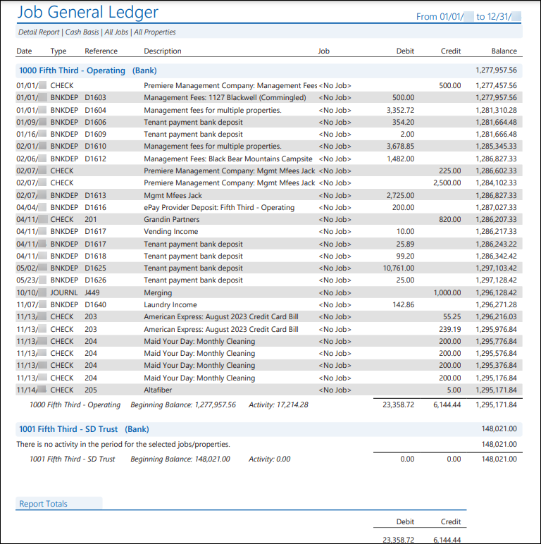
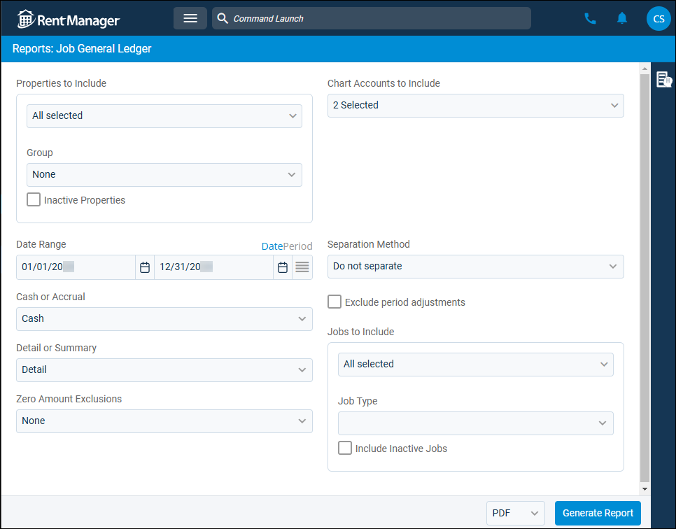
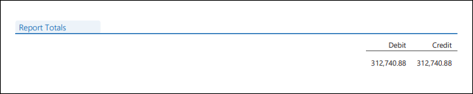

Source: https://rmxhelp.rentmanager.com/Topics/Express/Other/Reports/Job-General-Ledger.htm
Job General Ledger (Report)
The Job General Ledger report displays the impact a job has had on selected general ledger (GL) accounts over a date range. This allows you to see the financial impact of a job and which transactions led to the balances of the GL accounts.
Related Privileges
| Group | Privilege | Column |
|---|---|---|
| Letter/Email Templates/Reports/Packets | Run reports | Enabled |
| Run accounting reports | Enabled |
Additionally, on the Reports tab, you must have access to Job General Ledger.
For more information, refer to Control User Access.
To view the Job General Ledger report, do the following:
-
Go to
 arrow_forward Accounting arrow_forward Job Costing arrow_forward Job General Ledger.
arrow_forward Accounting arrow_forward Job Costing arrow_forward Job General Ledger.
The Reports: Job General Ledger page displays. -
Adjust the report options as desired. Each option is described below.
-
Generate the report in your desired file format(s).
Related Preferences
Reports may look different depending on whether or not the Use modernized report style system preference is enabled. For more information, refer to General Report Options (System Preferences).

Report Options
The report options described below determine what data displays in the report.

Properties to Include
Select each property or a property Group to be included in the report.
More Information
This field populates only with the properties to which you have access. Your access to properties can be managed from your user account or on the property's details page. For more information, refer to Limit Access to a Property.
Optionally, check Show Inactive Properties to include properties that are no longer active.
Date Range
Enter or select the date range to determine the data that displays in the report.
To the right of the Date Range option, you can click Date to manually select a date range, or Period select a date range based on accounting periods.
Set a Date Range
In the Date Range section, set the From and To dates for which the report should examine data.
These fields automatically populate with today’s date. Enter a different date or select a date from the calendar. Alternatively, adjust the dates using the available preset buttons or click  to open more options for setting a date range.
to open more options for setting a date range.
Select an Accounting Period
Related Preferences
To generate the report using accounting periods, the General Ledger Settings (System Preferences) option to Enable accounting periods must be enabled.
Financial reports default to the manual Date view unless the General Ledger Settings (System Preferences) option to Default to accounting periods for financial reports is checked. Enabling this option sets the financial reports to default to the Period view for Date Range.
Configure the following options to determine the period Date Range uses:
| Option | Description |
|---|---|
|
Series |
Select the desired series, as defined in accounting periods. |
|
Single Period |
Select Single Period to generate the report for one accounting period. When this option is selected, you can also select the Year of the period you wish to use and the Period, which allows you to generate the report from the period's Start Date through the period's End Date. |
|
Multiple Periods |
Select Multiple Periods to generate the report across multiple accounting periods. When this option is selected, you can also select a Start Year and End Year or a Start Period and End Period to determine the To and From date for which the report is generated. |
Cash or Accrual
This option determines whether the financial activity is calculated on a cash or accrual basis.
| Option | Description |
|---|---|
|
Accrual |
Includes all transactions for which income was earned and expenses were incurred, regardless of whether the payment was received or disbursed. |
|
Cash |
Includes only transactions for which payments are received or made. |
Detail or Summary
This option determines how much information is displayed in the report.
| Option | Description |
|---|---|
|
Detail |
A line item for each transaction organized by the general ledger (GL) account display. |
|
Summary |
The total amount of transactions combined into a single row for each GL account display. |
Zero Amount Exclusions
Select an option to determine which GL accounts are excluded from the report results.
| Option | Description |
|---|---|
|
None |
Display all selected GL accounts. |
|
Activity |
Exclude selected GL accounts that had no transactional activity during the date range. |
|
Balance |
Exclude selected GL accounts that have no balance at the end of the date range. |
|
Activity or Balance |
Exclude selected GL accounts that either have no balance at the end of the selected date range or no transactional activity during the date range. |
|
Activity and Balance |
Exclude selected GL accounts that have both no balance at the end of the selected date range and no transactional activity during the date range. |
Chart Accounts to Include
The report displays transactions that debit or credit any of the selected general ledger (GL) accounts. If no transactional activity took place during the selected date range, the report displays No activity in the period.
In addition to manually selecting GL accounts, you can use the following options to filter and select the accounts. The list of GL accounts updates depending on the options selected here.
| Option | Description |
|---|---|
|
Mapping |
Select the name of the desired mapping method to customize the display of GL accounts included in the report by using the virtual accounts of a chart mapping. For more information, refer to Chart Accounts Mapping (Page). If no chart account mappings are created, the drop-down list displays None. |
|
From Account |
To set a range of GL accounts, select the first account in your range from the drop-down list. All accounts between and including the From Account and To Account are checked in the list. |
|
To Account |
To set a range of GL accounts, select the last account in your range from the drop-down list. All accounts between and including the From Account and To Account are checked in the list. |
|
Group |
Select a GL account type group from the drop-down list to quickly select all accounts of that type. For example, selecting Bank checks all the banks in the list. |
Separation Method
Select one of the following options to determine how the report results are batched:
| Option | Description |
|---|---|
|
Do not separate |
All selected properties are combined into a single report. |
|
Separate by Properties |
Generates a separate report for each selected property. |
|
Separate by Jobs |
Generates a separate report for each selected job. |
Exclude Period Adjustments
Check to remove any journal entries marked as a Period Adjustment from the report results.
Jobs to Include
Select the job(s) to be examined in the report. Optionally, check Include Inactive Jobs to include jobs that are no longer active.
Report Results
The report results are described below including, if applicable, section, column, and subreport descriptions.
Report Header
The report header displays the report name and key information selected in the report options, such as date information and which properties were examined in the report.
Column Descriptions
The report generates with different columns depending on the report options selection in the Detail or Summary section.
Detail
If the report option for Detail is selected, the following columns display.
| Column | Description |
|---|---|
|
Date |
The date on which the transaction took place. |
|
Type |
The type of transaction that took place. For example, if a check was written, CHECK displays. |
|
Reference |
The transaction’s reference number. For example, if a check was written, the check number displays. |
|
Description |
A description of the transaction. This includes the following:
|
|
Job |
The Name of the job as entered on the job details page's General tile. |
|
Debit |
The amount that was debited from the account for each transaction. Debits increase expense and asset accounts, but decrease income, equity, and liability accounts. |
|
Credit |
The amount that was credited to the account for each transaction. Credits increase income, equity, and liability accounts, but decrease expense and asset accounts. |
|
Balance |
The running balance of the GL account after each transaction took place. |
Summary
If the report option for Summary is checked, the following columns display.
| Column | Description |
|---|---|
|
Account |
The name and number for each GL account selected in the report options. |
|
Type |
The general ledger (GL) account type displayed in the chart of accounts. |
|
Balance |
The balance of the GL account prior to the beginning of the selected date range. |
|
Debits |
The total amount that was debited from the account at the end of the date range. Debits increase expense and asset accounts, but decrease income, equity, and liability accounts. |
|
Credits |
The total amount that was credited to the account at the end of the date range. Credits increase income, equity, and liability accounts, but decrease expense and asset accounts. |
|
Ending Balance |
The balance of the GL account at the end of the selected date range. |
Report Totals Subreport
This subreport displays the total amount that was debited, and the total amount that was credited to the selected accounts at the end of the date range.
